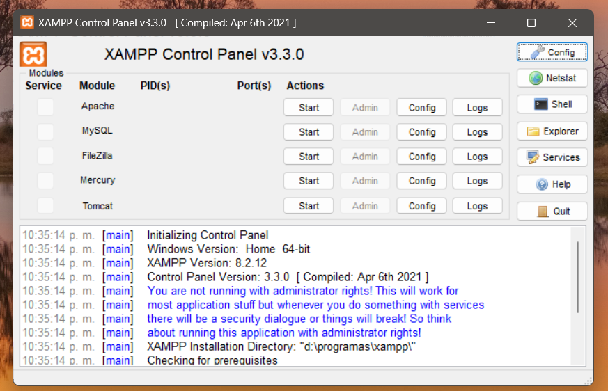
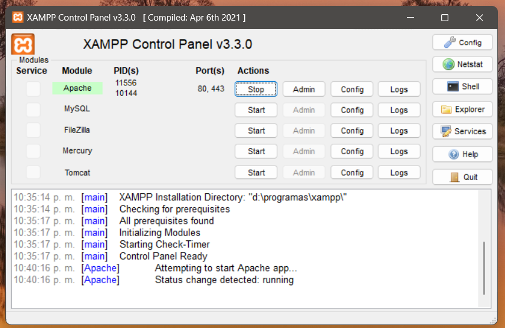
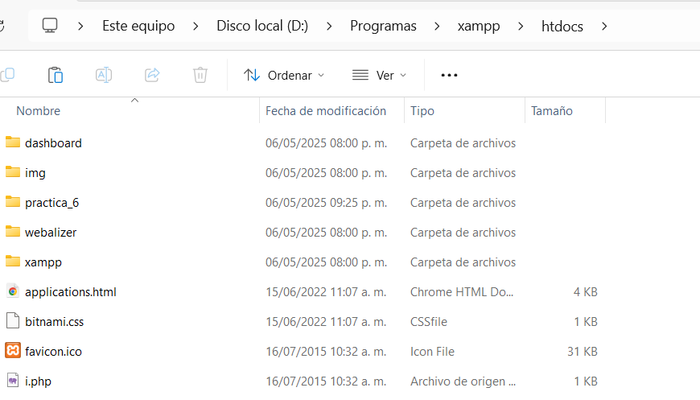
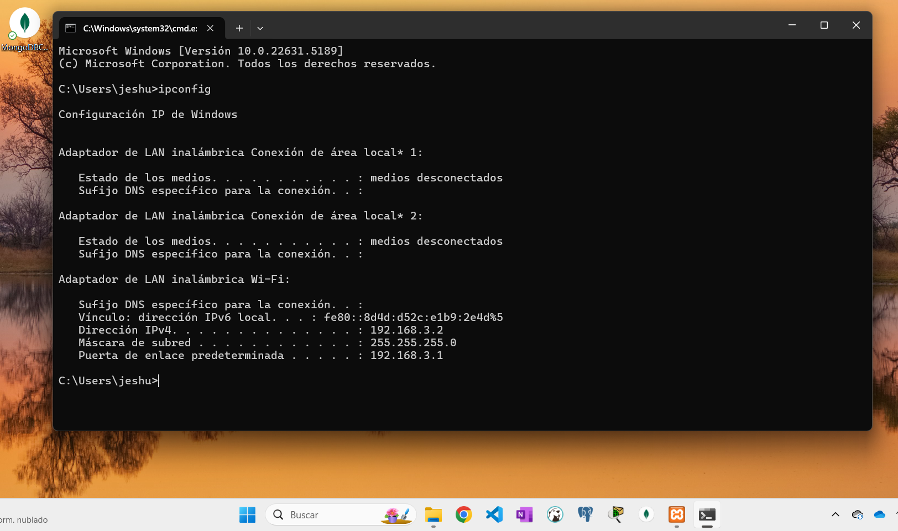
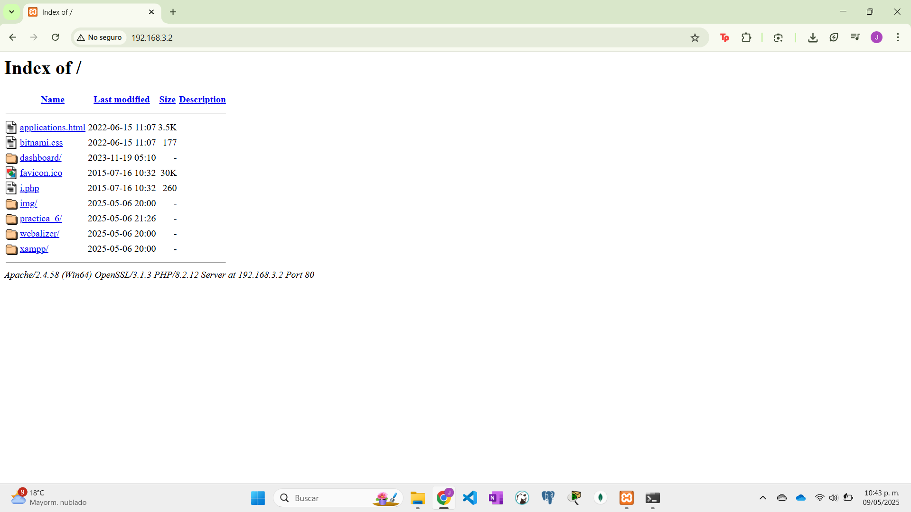
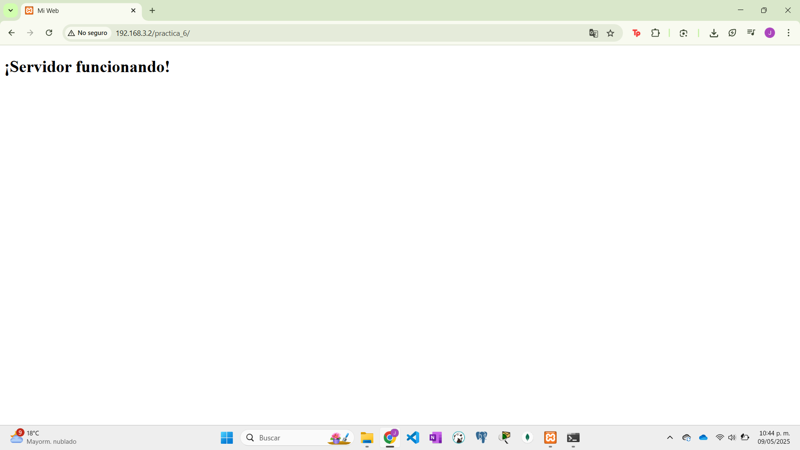
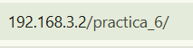

Practica 6
Laboratorio de Redes Digitales de Datos
Departamento de Ciencias e Ingenierías | Universidad Iberoamericana Puebla, México.


- Resumen -
En esta práctica, se explorarán los pasos necesarios para configurar una red local básica y habilitar el acceso a los recursos de un equipo dentro de ella. El objetivo principal es instalar y configurar un servidor web local utilizando XAMPP, habilitar el acceso a través del firewall, identificar la dirección IP del servidor en una red dada y, finalmente, comprobar el acceso al sitio web alojado desde múltiples dispositivos conectados a la misma red local.
- Introducción -
Comprender cómo configurar una red local y compartir recursos es fundamental en el ámbito de las redes de computadoras. Esta práctica se enfoca en la creación de un entorno de servidor web local y la verificación de su accesibilidad dentro de una misma red. Al utilizar XAMPP, una distribución de Apache que facilita la configuración de un servidor web local, se aprenderá a desplegar un sitio web básico. Posteriormente, se abordarán los aspectos de configuración del firewall para permitir el tráfico entrante al servidor y la identificación de la dirección IP, crucial para el acceso desde otros dispositivos en la red. Finalmente, la comprobación del acceso desde diferentes puntos permitirá validar la correcta configuración de la red local y el servidor web.
- Materiales -
- Una computadora personal con sistema operativo compatible con
XAMPP.
- Dispositivos adicionales con capacidad de conexión a la misma red.
- Software XAMPP.
- Un navegador web instalado en todos los dispositivos.
- Desarrollo -
1. Instalación y Configuración de XAMPP:
- Descargar XAMPP desde el sitio web oficial:
https://www.apachefriends.org/es/index.html
- Ejecutar el instalador y seguir los pasos para completar la
instalación en la computadora designada como servidor local.
- Iniciar el Panel de Control de XAMPP y habilitar los servicios de
Apache. Verificar que el servicio se inicie correctamente (los
módulos Apache deben mostrar un estado "Running" o similar).
- Montar un sitio web de prueba en el directorio `htdocs` dentro de
la carpeta de instalación de XAMPP. Puede ser un archivo
"index.html" simple con algún contenido básico.
2. Habilitación del Acceso al Puerto 80 en el Firewall:
- Acceder a la configuración del Firewall de Windows (o el firewall
utilizado en el sistema operativo del servidor).
- Crear una regla de entrada que permita las conexiones al puerto
TCP 80. Este es el puerto predeterminado para el tráfico HTTP (web).
Asegurarse de que esta regla esté habilitada para la interfaz de red
activa.
3. Identificación de la Dirección IP del Servidor Local:
- Conectar la computadora servidor a la red de internet (IBERO o red
personal).
- Abrir la línea de comandos (en Windows) o la terminal (en macOS o
Linux).
- Ejecutar el comando "ipconfig" (en Windows) o "ifconfig" (en macOS
o Linux) para identificar la dirección IP asignada a la interfaz de
red activa. Anotar esta dirección IP (generalmente en el formato
IPv4).
4. Comprobación del Acceso al Sitio Web desde Dispositivos en
Red:
- Asegurarse de que los tres dispositivos adicionales estén
conectados a la misma red local que la computadora servidor.
- En el navegador web de cada uno de los tres dispositivos, ingresar
la dirección IP del servidor local obtenida en el paso anterior en
la barra de direcciones (ejemplo: "http://192.168.1.100").
- Verificar que el sitio web montado en el servidor local se
visualice correctamente en los navegadores de los tres dispositivos.
- Documentar si el acceso fue exitoso en cada uno de los
dispositivos.
- Resultados -
Los resultados obtenidos permitirán verificar la correcta
configuración del servidor web local y la accesibilidad al sitio web
montado desde diferentes dispositivos en la misma red.
Se registrarán los siguientes comportamientos:
- Estado de los servicios Apache en XAMPP.
- Configuración de la regla de entrada del puerto 80 en el
firewall.
- Dirección IP asignada al equipo servidor en la red. - Estado del
acceso al sitio web desde cada uno de los tres dispositivos.
Panel de control

Panel de control con servicio de Apache

Carpeta htdocs, donde se pondrn archivos

Configuracion ipconfig para ver la direccion IPv4

Direccion IPv4 en el navegador con el servidor en linea

Pagina corriendo en el serivdor en e dispositivo local

Direccion URL comprobando la direccion al servidor

Pagina corriendo en el serivdor en e dispositivo 2

Pagina corriendo en el serivdor en e dispositivo local

- Conclusiones -
CCon esta práctica, se ha logrado conocer e implementar los pasos fundamentales para configurar un servidor web local utilizando XAMPP y habilitar el acceso a sus recursos dentro de una red local. Se comprendió la importancia de configurar el firewall para permitir el tráfico de red necesario y la utilidad de la dirección IP para la comunicación entre dispositivos en una red. La comprobación del acceso desde múltiples dispositivos validó la correcta configuración del entorno de red y del servidor web, proporcionando una base para entender cómo se comparten recursos en redes de computadoras.
- Referencias -
Apache Friends. (s.f.). XAMPP. Recuperado de https://www.apachefriends.org/es/index.html
Transmisión de datos y redes de comunicaciones (4a ed.). McGraw-Hill.
Gokhale, P., Bhat, O., & Bhat, S. (2018). Introduction to IOT. International Advanced Research Journal in Science, Engineering and Technology, 5(1), 41-44.
- Descargables -
Descargar documento PDF: documento.pdf
Descargar codigo Arduino: codigo.ino
Descargar Archivo 3d .STL: pieza.stl